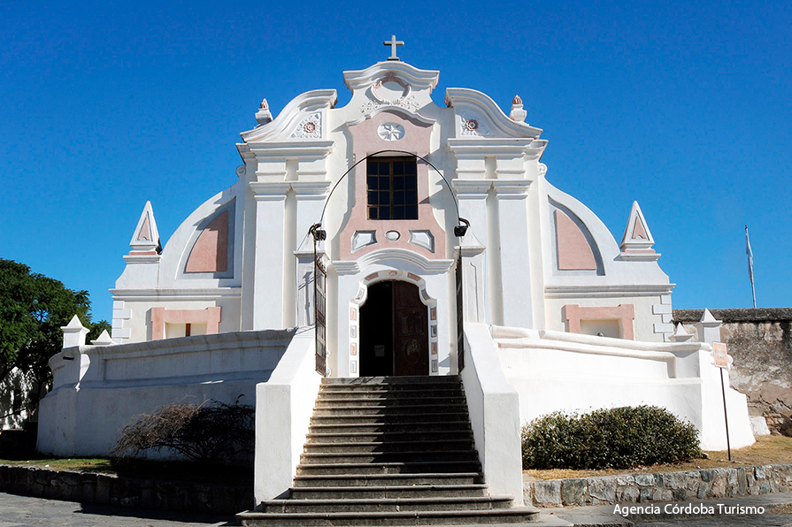

Alta Gracia y sus Iglesias
Convento Las Carmelitas Descalzas A muy pocas cuadras del Tajamar, el silencio gana protagonismo, ya que el convento ubicado en la intersección de las calles Madero y Larreta alberga a una congregación de monjas de clausura que, dedicadas a la vida de oración y contemplación, viven únicamente del trabajo de sus manos, ya sea realizando alfajores artesanales y grabados en cuero como también imágenes de yeso y tallas en cristal de finísima calidad. Además de apreciar la humildad del edificio, las visitas pueden disfrutar de una vista panorámica de la villa serrana.